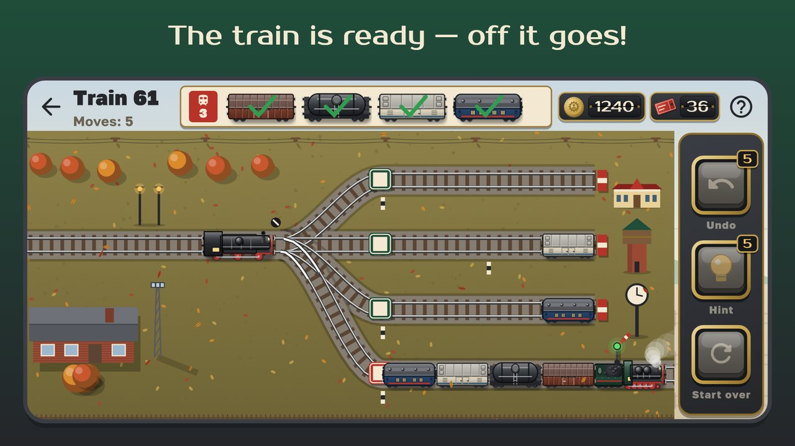

Русский
Sorting Yard
Puzzle · 0+Shunt the wagons, build the train by the waybill: a Soviet railway puzzle.
A little shunting diesel, a fan of switches, dead-end sidings and a waybill: build the train exactly as the dispatcher says and send it on its way.
Tap a wagon and the diesel takes it along with every wagon nearer the throat. Tap a track and the group goes there. Park wagons on the sidings and build the train on the formation track in the waybill's order. The last wagon couples, the signal turns green, and the mainline locomotive whistles and pulls the train away.

WaybillWhat's inside
- 300 levels in six eras: from 1930s steam near Moscow to the ER200 on the Moscow – Leningrad line, through the Urals, Central Asia, the Trans-Siberian and a winter night on the BAM.
- Every level is solved in advance: there is always a way to win, and three stars for matching the shortest solution.
- Something new every 10–20 levels: traction, tracks of different lengths, a hump, numbered wagons, a track under repair, a reversing loop, two trains at once.
- Depot museum: 18 Soviet locomotives — Ov, FD, P36, TE3, VL80, ChS2, VL85, ER200 and more — unlocked by stars; pick the one that pulls your trains.
- Your own station: water tower, station house, clock, lamps, flower beds and a buffet.
- Daily run and tasks, New Year and Railway Workers' Day events.
- No rush and no losing: undo, hints and restart are always at hand.
- Works offline, in Russian and English; an optional reminder after a week away, can be turned off in the settings.
Departure on schedule — your first train is waiting!